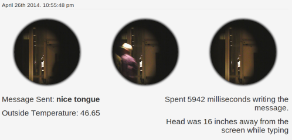

Anonymous Box was conceived of and created at Hampshire College in advanced sculpture during the Spring 2014 semester. It was prompted in reaction to the Snowden leaks. Anonymous Box is a large metal box which allows users to send messages to the next person who uses the box. While the box prompts and invites a passerby to interact with it, the box is covertly mining data about the user.
Collecting not only the users interactions with the box. The box also collects pictures, distance readings, and temperature readings. The box is consuming much more that the user thinks they are inputting. At the end of the interactions all the information is bundled and sent to anonymousbox.herokuapp.com
The box restricts which kinds of messages the user can send through it, Only allowing messages less than 168 characters with no formatting and no numbers. This prompts the user to behave in a way similar to how they might behave "anonymously" on the internet. Because the box has so little functionality on the surface most users are confused as to why such a structure was built provoking them to think about the reasons behind the box and why there is a hole drilled into the sheet metal facing them. If the methods of interaction were more complex the box would have more closely resembled the way a social media website works but it would not prompt the user to look further as it does now.
Social media sites pose as innocuous, benign services which allow users to share and manipulate content. Behind this front is systematic data collection, vested interests, and a voyeuristic addiction to extracting every bit of information possible. Most tech services data collection policies are opt-out not opt-in, and only the ones who are aware that their data is being collected can choose to opt-out. Anonymous Box is an attempt at recreating this scenario on a small-scale in such a way that people would actively search out and discover this intrusion of privacy
The simple technology used to create data (the arduino and old keyboard) is analogous to the simple technology needed to use social websites. The more complex technology used to parse and display the data (the hidden laptop and node.js website) are analogous to the complex services needed to collect and sift trough the data.
This was the largest scale project I have ever undertook by myself. I understood that it would be difficult but I completely underestimated how long it would take to build the physical structure and make all the parts interact together. I also wish I could have done more testing with people from the beginning a lot of unexpected bugs came to light the minute I put it out in public. From the beginning I should have been adding better system reseting and error handling. It would have saved me a lot of time.
The biggest problem with the structure is the less than desirable mounting of the arduino and laptop within the structure. Just because elements are hidden from the user doesn't mean they should be done hastily and without attention to design. Right now all the electronics are plugged into an unsoldered breadboard, the arduino is, very loosely, velcroed to a piece of plywood which is even more loosely velcroed to the hidden side of the sheet metal. I wish I had been thinking of potential enclosures and ways of fastening the components from the beginning.
The front-end of the box is a ST7565 screen and an old PS/2 keyboard and an ultrasonic range finder. Hidden in the box is an arduino duemilanove which handles all the users interactions and collects data from the ultrasonic range finder. Also inside, an old gateway lt3103u laptop gutted of its hard drive and booting xubuntu from a flash drive. The arduino sends the information via serial to the laptop which then takes three images using U19-A Webcam concealed behind the front frame. The computer then sends the informtion to the website


{kind=link}
{kind=link}